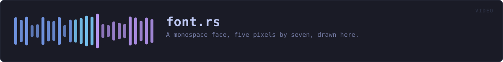

crates/veilvoice-video/src/font.rs
veilvoice-video · 418 lines · read the source here · or on GitHub
A monospace face, five pixels by seven, drawn here.
Why this exists rather than a font file
crate::frames draws the video's pictures as actual pixels, and names are text. Text needs a face and a rasteriser, and the two usual ways to get those are both wrong for this project.
Loading one of the system's fonts makes the output depend on which machine drew it: the same recording rendered on two computers would produce different files, and this project publishes reproducible builds and checks them. Pulling in a font rasteriser means a large dependency to draw eight names, in a program whose front page invites the reader to run cargo tree and find nothing large.
So the face is here, it is ninety-five glyphs, and it is the same everywhere.
What it can and cannot draw
Printable ASCII, from space to ~. Anything else is drawn as an open box, which is the honest way to render a character this cannot: a name in Cyrillic or Japanese comes out as boxes rather than as nothing, and crate::frames says so in its notes rather than letting somebody find out by watching the finished video.
The preview page does not have this limit, because it is markup and uses whatever the reader's machine has. That is a real difference between the two outputs and it is written down rather than glossed over.
Five by seven
Small enough to write out and check by eye, large enough to stay legible when scaled up by whole numbers, which is the only way it is ever scaled: a bitmap glyph drawn at a fractional size is a blurred glyph, so Face::scale_for picks a whole-number multiple and the text is crisp at any frame size.
In plain words
The letters used in the video, drawn dot by dot inside this program.
It is here rather than taken from the computer so that the same recording makes the same video on every machine, and so that this program does not have to carry a large piece of somebody else's code to write eight names.
WHAT THIS FILE CONTAINS
418 lines defining 4 functions (4 public), 0 types and 7 constants. Everything below is read out of the source, so it cannot disagree with the code.
What happens when it runs. These are the ways in: public, and nothing else in this file calls them, so they are what an outside caller reaches first.
can_drawline 286 · Whether every character in text can be drawn.
reachesglyphscale_forline 310 · The largest whole-number scale at which text fits inside room pixels.
reacheswidth_of
WHAT CALLS WHAT
The functions this file defines, and the calls between them. An edge means the callee's name appears, called, inside the caller's body. This is a syntactic reading, not a type-resolved one.
The same graph as Mermaid source
%%{init: {"theme":"base","themeVariables":{"background":"#1a1b26","primaryColor":"#1f2335","primaryTextColor":"#c0caf5","primaryBorderColor":"#7aa2f7","secondaryColor":"#16161e","tertiaryColor":"#16161e","lineColor":"#737aa2","textColor":"#c0caf5","mainBkg":"#1f2335","nodeBorder":"#7aa2f7","clusterBkg":"#16161e","clusterBorder":"#2f3549","fontFamily":"ui-monospace, SFMono-Regular, Consolas, monospace","fontSize":"14px"}}}%%
flowchart TD
n_glyph["glyph<br/>line 274"]
n_can_draw(["can_draw<br/>line 286"])
n_width_of["width_of<br/>line 291"]
n_scale_for(["scale_for<br/>line 310"])
n_can_draw --> n_glyph
n_scale_for --> n_width_of
click n_glyph href "https://github.com/tilas01/veilvoice/blob/main/crates/veilvoice-video/src/font.rs#L274" "open the source"
click n_can_draw href "https://github.com/tilas01/veilvoice/blob/main/crates/veilvoice-video/src/font.rs#L286" "open the source"
click n_width_of href "https://github.com/tilas01/veilvoice/blob/main/crates/veilvoice-video/src/font.rs#L291" "open the source"
click n_scale_for href "https://github.com/tilas01/veilvoice/blob/main/crates/veilvoice-video/src/font.rs#L310" "open the source"
classDef entry fill:#1f2335,stroke:#7aa2f7,color:#c0caf5
class n_can_draw,n_scale_for entry
classDef api fill:#1f2335,stroke:#7dcfff,color:#c0caf5
class n_glyph,n_width_of apiThis site loads no third-party script, so it cannot run Mermaid; the diagram above is the same nodes and edges drawn by the generator instead. GitHub renders the source below directly.
ITEMS
| Item | Line | Documentation |
|---|---|---|
FIRST pub const | 48 | The first character the face has a glyph for. |
LAST pub const | 50 | The last character the face has a glyph for. |
WIDTH pub const | 53 | Width of one glyph, in pixels, before scaling. |
HEIGHT pub const | 55 | Height of one glyph, in pixels, before scaling. |
GAP pub const | 61 | The gap between two glyphs, in unscaled pixels. |
GLYPHS const | 68 | The glyphs, one row of five bits per line, seven lines per character. |
UNKNOWN const | 266 | The box drawn for a character this face has no glyph for. |
glyph pub fn | 274 | The rows of character, and whether the face actually had it. |
can_draw pub fn | 286 | Whether every character in text can be drawn. |
width_of pub fn | 291 | How wide text is at scale, in pixels. |
scale_for pub fn | 310 | The largest whole-number scale at which text fits inside room pixels. |